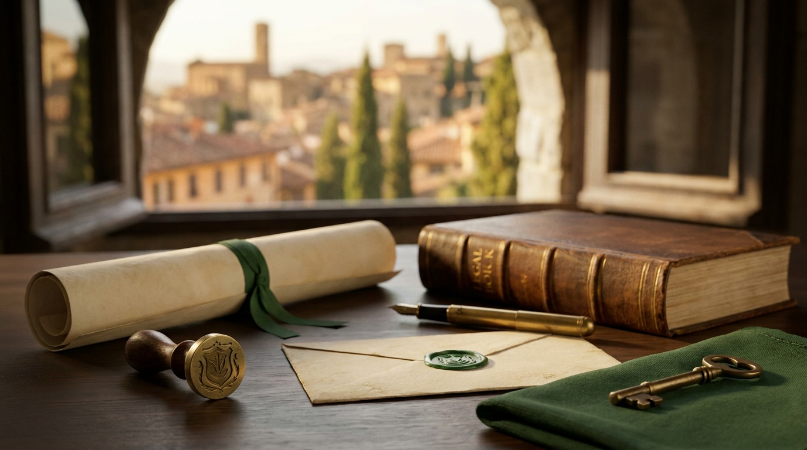

Disdetta dell'affitto: a quale indirizzo va inviata per essere valida
Inviare la disdetta di un contratto di locazione all'indirizzo corretto fa la differenza tra un recesso valido e uno inefficace. La Corte di Cassazione ribadisce che la comunicazione produce effetti quando giunge all'indirizzo indicato nel contratto, anche in assenza fisica del destinatario. Una regola che protegge chi recede, ma impone attenzione nella scelta del recapito.

Il principio: la disdetta arriva, quindi vale
La disdetta di un contratto di locazione è un atto unilaterale recettizio. Significa che produce i suoi effetti nel momento in cui giunge a conoscenza del destinatario, non quando viene spedita.
La Corte di Cassazione ha confermato un orientamento consolidato: la comunicazione si considera ricevuta quando arriva all'indirizzo del destinatario, anche se questi non è materialmente presente per ritirarla. Conta la disponibilità della comunicazione, non l'effettiva lettura.
Questo chiarisce un dubbio frequente: a quale indirizzo va spedita la disdetta perché sia efficace?
Inquadramento normativo
Il riferimento è l'art. 1334 del Codice civile, secondo cui gli atti unilaterali destinati a una persona determinata producono effetto dal momento in cui giungono a conoscenza del destinatario.
A completare il quadro interviene l'art. 1335 c.c., che introduce una presunzione di conoscenza: la proposta, l'accettazione, la revoca e ogni altra dichiarazione diretta a una persona determinata si reputano conosciute nel momento in cui giungono all'indirizzo del destinatario. La presunzione cade solo se il destinatario prova di essere stato, senza sua colpa, nell'impossibilità di averne notizia.
È una presunzione che ribalta l'onere della prova: chi invia non deve dimostrare che l'altro abbia letto la lettera. È il destinatario a dover provare l'impossibilità incolpevole di conoscerla. Una semplice assenza temporanea o il mancato ritiro non bastano.
Quando il contratto indica un domicilio o un indirizzo specifico per le comunicazioni, quella diventa la sede di riferimento. Va prestata attenzione anche all'art. 1341 c.c. in tema di clausole predisposte da una parte, che disciplina l'efficacia di eventuali pattuizioni sui recapiti.
Cosa cambia per chi recede
Per il conduttore o il locatore che intende dare disdetta, la conseguenza pratica è chiara: l'efficacia non dipende dalla buona volontà della controparte nel ritirare la posta.
Se la lettera raccomandata viene inviata all'indirizzo contrattuale e la consegna è impossibile per assenza del destinatario, la giacenza presso l'ufficio postale fa comunque scattare la presunzione di conoscenza decorso il periodo previsto. Il recesso, quindi, produce effetti.
Il rovescio della medaglia riguarda l'indirizzo sbagliato. Spedire la disdetta a un recapito diverso da quello indicato nel contratto, o a un domicilio non più valido, espone al rischio che la comunicazione sia considerata mai pervenuta. In quel caso il termine di preavviso non decorre e il rapporto prosegue.
Ecco perché l'individuazione dell'indirizzo corretto non è un dettaglio formale, ma il presupposto stesso della validità dell'atto.
Cosa fare in concreto
- Verifica il contratto: individua l'indirizzo o il domicilio eletto per le comunicazioni. Se presente, usa quello. In mancanza, fai riferimento all'ultima residenza o sede nota della controparte.
- Usa un mezzo tracciabile: raccomandata con avviso di ricevimento o posta elettronica certificata (PEC) se il contratto la prevede o le parti la usano abitualmente. Conserva la prova di spedizione e di consegna.
- Rispetta i termini di preavviso: calcola il periodo a ritroso dalla data di efficacia desiderata, considerando che gli effetti decorrono dal momento in cui la disdetta giunge all'indirizzo, non dalla spedizione.
- Documenta la giacenza: se la consegna non va a buon fine per assenza del destinatario, conserva l'avviso di giacenza. È l'elemento che attiva la presunzione di conoscenza.
- Formula il testo con chiarezza: indica con precisione il contratto di riferimento, la volontà di recedere e la data di efficacia, evitando ambiguità che possano dare adito a contestazioni.
Una valutazione caso per caso
Le locazioni abitative e quelle a uso diverso seguono regole sui termini di preavviso non sempre coincidenti, e clausole contrattuali specifiche possono modulare modalità e recapiti. Prima di inviare una disdetta consigliamo di verificare la disciplina applicabile al singolo rapporto e la corretta individuazione del destinatario.
---
*Contributo informativo a cura di Tamburro & Partners - Avv. Giuseppe Tamburro. Non costituisce parere legale.*
Ogni contratto ha il suo equilibrio.
Se vuoi una revisione delle clausole o una redazione su misura, scrivi allo studio. Ti rispondiamo entro un giorno lavorativo.